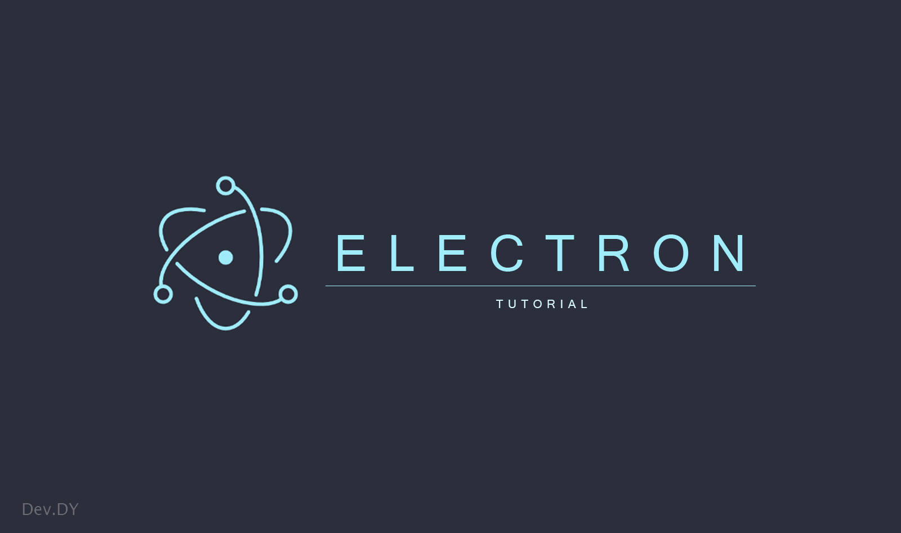
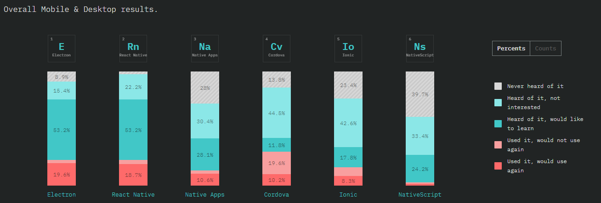
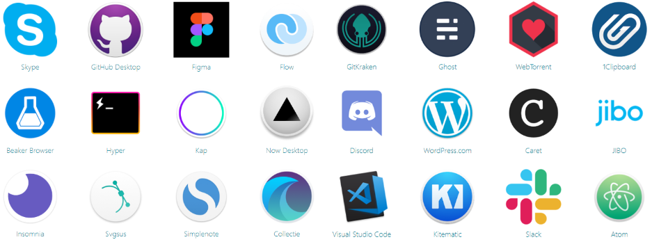
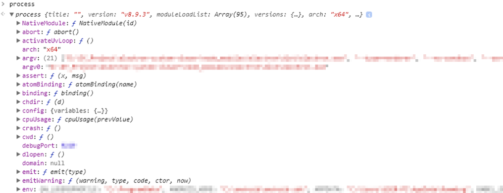
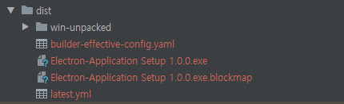

Electron 완전정복!! - 개념부터 데스트탑 앱 만들기

처음 Electron을 알게 된 경로는 웹 신기술 관련하여 검색하다가 우연히 알게 되었다. 그때는 그저 글로만 보고 뭐? JavaScript로 데스크 탑 앱을 만든다고? 가능한가 이게? 라는 생각만 하고 좀 찾아보았고 오오~ 하다가 말았던 기억이 있다. 그로부터 꽤 시간이 지났고 불과 몇 년 전에 Front-End 컨퍼런스에 참여하였고 Electron 섹션을 듣고 나서 꼭 한번 해보고 싶다고 생각했다. 그걸 인제야 포스팅하고 있다.
Electron
Electron은 Chromium과 Node.js를 사용하여 JavaScript, HTML, CSS를 이용하여 윈도우 또는 Mac, 리눅스에서 직접 설치하여 사용할 수 있는 애플리케이션을 개발 할 수 있다. 크로스 플랫폼 지원으로 이 세 개의 운영체제에서 빌드되고 동작한다. 웹 개발자라면 습득한 기술 그대로 Electron만 익혀서 어느 운영체제에서든 동작하는 설치형 애플리케이션을 프로그래밍할 수 있다는 소리이다.
Electron 공식 사이트에 가보면 이런 문구가 있다.
It’s easier than you think - Electron은 여러분이 생각한 것보다 쉽습니다
Electron을 직접 해보면 알겠지만, 문구 그대로인 듯하다. 처음에 생각만 해본다면 웹 기술을 이용하여 데스크 탑 애플리케이션을 만든다고 하면 이것저것 설치하고 설정하고 무지막지하게 복잡할 것 같다. 하지만 그런 복잡한 작업은 Electron이 처리해 준다. 그저 웹 개발자는 그냥 웹으로 생각하고 코딩만 하면 된다. 물론 Electron에 대해서 배워야 하지만 말이다.
사실 처음 Electron으로 해보면서 너무 신기하였지만 다른 한편으로는 Electron을 이해하는데 힘들었다. 웹 개발자로서 항상 브라우저의 리소스만 사용하다가 웹 기술을 통해서 시스템 지원을 막 가져다 쓴다… 너무 신기했지만, 웹에 항상 국한돼서 개발한 나에게 이 신기한 기술이 내가 기존에 가지고 있던 웹 개념들을 마구 흔들어 놓았다.
Electron의 추이
현재 Electron의 버전은 4.x이다. 처음 1.x를 출시한 게 2016년도이고 최초로 0.x를 출시한 것은 2013년도 있다. Electron Version에서 모든 버전을 볼 수 있다.
0.x 버전을 제외하고 1.x부터 본다면 출시한 지 약 3년이 되었다. 그동안 Electron이 얼마나 인지도가 높아졌는지 확인해 보자.
상승 중이기는 하나.. 급격한 변화는 없어 보인다.
서로 다른 프레임워크이지만 상승 추세를 보기 위해 Vue.js와 비교를 해보자.
이렇게 보니 확연히 차이 나 보이긴 한다. 그렇다고 Electron이 흐지부지 그저 그런 프레임워크는 아니다. 단순히 Google Trend로 확인해 보았을 경우이다.
2018 The State of JavaScript - Mobile & Desktop 부분을 보자.

Electron이 한자리한 것을 볼 수 있다. 배우고 싶은 개발자들의 퍼센테이지와 이미 프로젝트 반영한 개발자들도 상당수 있다. 중요한 건 배우고 싶은 개발자들의 비율이 꽤 있다는 것이다. 개발자들은 배우고 싶은 것은 배우고 프로젝트 도입하기 때문에… 뇌피셜이다.
Electron의 사용성
추이는 그저 Electron의 인지도를 감을 잡기 위해서 본 것이고 실제로 이 Electron을 가지고 프로젝트에 도입하고 실제로 서비스를 했다면 이야기는 달라진다. 이런 프로젝트가 무수히 많고 우리가 들으면 모두 알 법한 애플리케이션들이 많다.
먼저 Electron 앱 Store에 등록된 애플리케이션을 보자. 수 천은 아니라도 다양한 애플리케이션이 등록되어 있다. 우리가 애플리케이션을 만든다면 이곳에 등록을 할 수가 있다. 찾아보면 Mac에서도 많이 사용되는 Simple-Note도 Electron Application이 있는 것도 볼 수 있다. 이 외에도 Awesome-Electeon에 올라온 오픈 소스 애플리케이션이 많으니 참고하면 된다.
공식 페이지에 바로 나와 있지만, 우리가 많이 사용하고 유명한 애플리케이션들이 많다. vscode, Discord, Slack, Atom.. 훌륭하다!

이렇게 본다면 현재 시점에서도 Electron을 도입해도 무방하다고 볼 수 있다.
Electron과 Web Application Framework
Electron은 웹 기반 기술을 사용하기 때문에 우리가 흔히 사용하고 Front-End Framework 3대장인 AngularJS, React.js, Vue.js Framework도 Electron과 같이 사용 할 수 있다. 물론 능력 있는 개발자들은 Electron에 직접 Web Framework를 얹어 사용할 수도 있지만 이미 능력자들이 만들어 놓은 Boilerplate와 start Template이 많이 있다.
이 Boilerplate와 Template 몇 가지를 살펴보자.
위 템플릿 사용한다면 문제없이 훌륭한 Electron Application을 만들 수 있다.
Electron 설치
이제 Electron에 대해 어느 정도 파악이 되었을 것이다. 이제 실제로 Electron을 설치해서 실행 보자. Node.js가 설치되었다고 가정하고 진행한다. 만약 Node.js가 무엇인지 모른다면 빠르게 배우는 Node.js와 NPM 설치부터 개념 잡기 포스트를 참고하자.
다행스럽게도 Electron 자체만으로도 빠르게 진행할 수 있는 electron-quick-start를 제공하고 있다.
우리는 이 Template를 받아서 실행해 보자.
1 | $ git clone https://github.com/electron/electron-quick-start |
지체 없이 node modules를 설치하고 실행하게 되면 Hello World!가 적힌 Electron Application이 실행된다. 해당 Application에서는 설치되어있는 Node.js, Chromium, Electron 버전이 출력되고 있다.
Electron Debug
실행까지는 매우 간단하게 진행되었다. 물론 Debugging 하는 것도 쉽다. 이미 Electron은 Chromium을 사용하였기 때문에 우리는 Chrome에서 개발 시 사용하던 devTools를 Electron에서도 사용할 수 있다.
1 | Menu > View > Toggle Developer Tools |
흔히 보던 DevTools가 실행이 된다. 여기서 Console 탭으로 가자.
1 | > process |

간단하지만 현재의 시스템 정보 등 몇 가지 정보를 볼 수 있다.
Electron Build
이제 이 아주 간단한 Application을 실제로 빌드를 하여 실행 파일로 생성해보자.
Application을 수동으로 빌드 시스템을 갖출 수도 있겠지만 역시나 Third-Party Package Tool 이 존재한다.
무엇을 사용할 것인가는 본인들이 판단하기 바라며, 이 포스트에서는 electron-builder를 사용해 보기로 하자.
npm을 통해 설치를 진행하자.
1 | $ npm i -D electron-builder |
설치가 되었으면 패키지에 필요한 정보를 package.json 가장 하단에 명시하자.
1 | { |
이제 package.json의 npm command를 수정하여 실행해 보자.
1 | { |
1 | $ npm run pack |
별도의 빌드옵션을 주지 않았기 때문에 가장 기본적으로 빌드가 될 것이다. 그래도 만족하지 않은가?
빌드 결과를 확인해 보자.

build 디렉토리가 생성되었을 것이고, 그 안에는 win-unpacked 디렉토리와, 생성된 exe 파일이 존재할 것이다. win-unpacked 안에는 빌드 결과물이 있으며, 이 안에도 exe 파일이 있을 것이다. 이 파일을 실행해 보자.
우리가 만든 Electron Application이 실행되는 걸 볼 수 있다. 그러면 이제 상위 디렉토리로 올라가 다른 exe 파일을 실행해 보자.
우리가 만든 Electron Application이 설치되는 것을 볼 수 있다. 바탕화면으로 가면 Electron 기본 아이콘으로 바로 가기가 생성된 것도 확인해 볼 수 있으며, 제어판 > 프로그램 및 기능으로 가면 설치된 항목을 볼 수 있다.
여기까지 해서 Electron이 무엇인지 그리고 Electron의 추이가 어떤지 확인도 해보고 간단하지만, Electron Application을 생성하고 실제로 배포까지 해 보았다. 간단하지만 우리는 지금 Electron의 한 과정을 경험 해 본 것이다. 이제 좀 더 퀄리티있는 Application을 만들기 위해 우리는 Web Framework를 추가해서 실제 그럴싸한 Application을 만들어 보자. 다음 포스팅엔 Vue.js와 Electron을 사용하는 방법 에 대해서 알아보도록 하자. 그전에 Vue.js가 무엇인지 자바스크립트 프레임워크 - Vue.js에서 확인해보도록 하자.